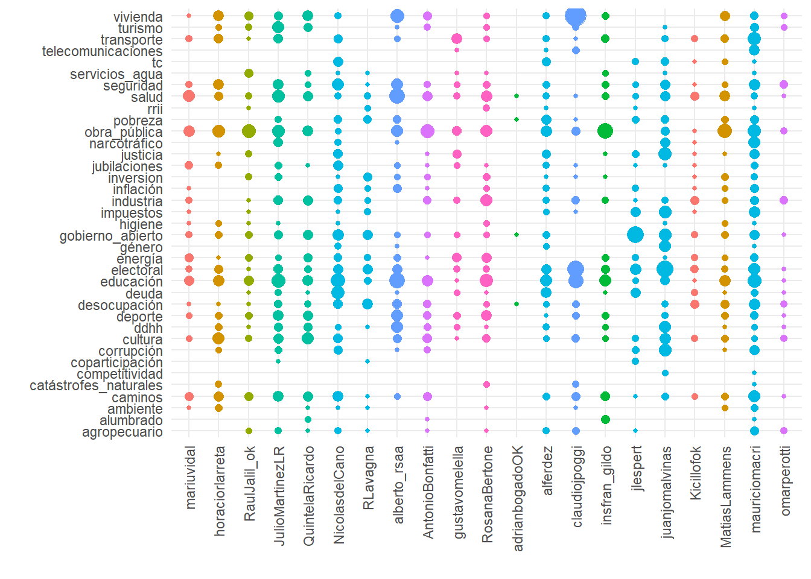

#1: Rastreo manual de temas por palabras
temas_palabras <- read_xlsx("temas_palabras.xlsx")candidatos_tokenizadas <- joined_candidatos %>%
tokenizarTextoTuits() %>%
left_join(datos_base)temas_palabras_match_tokens <- candidatos_tokenizadas %>%
limpiarTokens(palabras_web = TRUE, hashtags = TRUE, mentions = TRUE) %>%
select(screen_name, tweet_id, tokens)
# calculando coincidencias
for (columna in 1:ncol(temas_palabras)) {
testear_coincidencias <- na.omit(as.data.frame(temas_palabras[columna])) %>%
rename( palabras = colnames(temas_palabras[columna]) )
new <- ifelse( temas_palabras_match_tokens$tokens %in% testear_coincidencias$palabras,
"1",
"0")
temas_palabras_match_tokens[ , ncol(temas_palabras_match_tokens) + 1] <- new # Append new column
colnames(temas_palabras_match_tokens)[ncol(temas_palabras_match_tokens)] <- colnames(temas_palabras[columna]) # Rename column name
}
temas_palabras_match_tokens_long <- temas_palabras_match_tokens %>%
pivot_longer(!c(screen_name, tweet_id, tokens), # una fila para cada combinación tuit/token/tema
names_to = "temas", values_to = "count") %>% # con una columna (count) que indica si está presente el tema en ese token-tuit
filter(count==1) # nos quedamos sólo con los tokens asignados a un tema# inspeccionando resultados / primera aproximacion
# cantidad de coincidencias por tuit
coincidencias_tweets <- temas_palabras_match_tokens_long %>%
group_by(tweet_id) %>%
dplyr::summarise(cantidad_coincidencias = sum(as.integer(count))) %>%
left_join(joined_candidatos)
# cantidad de coincidencias por tema por tuit
ncoincidencias_tema_tweets <- left_join(joined_candidatos %>%
filter(Campaña == 1 ),
temas_palabras_match_tokens_long %>%
dplyr::count(tweet_id, temas)
) %>%
select(tweet_id, screen_name, text, temas, n) %>%
dplyr::rename(coincidencias_tema_tuit = "n")# ejemplo: tuit con muchas coincidencias sobre un mismo tema
ejemplo1 <- ncoincidencias_tema_tweets %>%
arrange(desc(coincidencias_tema_tuit)) %>%
head(1)
twitterwidget(as.character(ejemplo1$tweet_id))Con estos datos ya podemos explorar los temas más populares.
# temas mas populares
temas_populares <- fct_count(ncoincidencias_tema_tweets$temas)
head(temas_populares, 10) %>%
gt::gt() %>%
gt::tab_header(
title = "Temas más populares entre los candidatos",
subtitle = "(conteo manual)") %>%
gt::tab_style(
style= cell_fill(color = "#00BFFF", alpha = 0.5),
locations = cells_title(groups = c("title", "subtitle"))) %>%
gt::tab_style(
style= cell_fill(color = "#E9EDF1", alpha = 0.5),
locations = cells_body()) %>%
gt::tab_style(
style= cell_text(
color = "#050505",
align = "center",
v_align = "middle",
weight = "lighter"),
locations = cells_body())| Temas más populares entre los candidatos | |
|---|---|
| (conteo manual) | |
| f | n |
| agropecuario | 30 |
| alumbrado | 10 |
| ambiente | 16 |
| caminos | 112 |
| catástrofes_naturales | 9 |
| competitividad | 3 |
| coparticipación | 5 |
| corrupción | 48 |
| cultura | 112 |
| ddhh | 69 |
# cantidad de temas por tuit
ntemas_tweets <- temas_palabras_match_tokens_long %>%
dplyr::count(tweet_id, temas) %>%
dplyr::mutate( tweet_id = as.factor(tweet_id))
# unimos con base de datos
cantidad_temas_tuit <- left_join(joined_candidatos %>%
filter(Campaña == 1 ) %>%
dplyr::mutate(tweet_id = as.factor(tweet_id)),
fct_count(ntemas_tweets$tweet_id) %>%
dplyr::rename(tweet_id = "f")) %>%
select(tweet_id, screen_name, text, n) %>%
mutate_if(is.numeric, funs(ifelse(is.na(.), 0, .))) %>%
dplyr::rename(cantidad_temas_tuit = "n")# ejemplo tuit con muchos temas
ejemplo2 <- cantidad_temas_tuit %>%
arrange(desc(cantidad_temas_tuit)) %>%
head(1)
twitterwidget(as.character(ejemplo2$tweet_id))# histograma descriptivo / cantidad de temas por tuit
plot_cantidad_temas_tuit <- cantidad_temas_tuit %>%
ggplot(aes(cantidad_temas_tuit)) +
geom_bar(fill = "#0F92DA") +
theme_clean() +
labs(x = "Cantidad de temas por tuit",
y = "Cantidad de tuits asignados")Para trabajar en lo que sigue nos quedaremos con los tuits que fueron asignados a un único tema.
tuits_con_unico_tema <- ncoincidencias_tema_tweets %>%
dplyr::mutate(tweet_id = as.factor(tweet_id)) %>%
left_join(cantidad_temas_tuit) %>%
filter(cantidad_temas_tuit == 1 )
temas_en_tuits_con_unico_tema <- fct_count(tuits_con_unico_tema$temas)Ya estamos en condiciones de evaluar similitudes y diferencias entre los candidatos. Vamos a ensayar algunos ejercicios visuales.
# temas preferidos por candidato
# cuenta absoluta
# ¿cuantos tuits sobre x tema emitio i candidato?
temas_candidatos_absolutos <- ncoincidencias_tema_tweets %>%
dplyr::count(screen_name, temas) %>%
na.omit(n) %>%
left_join(datos_base)
plot_temas_candidatos_absolutos <- temas_candidatos_absolutos %>%
dplyr::mutate(screen_name = as.factor(screen_name)) %>%
ggplot(aes(x = fct_reorder(screen_name, Distrito), y = temas, size= n, colour = Distrito)) +
geom_count() +
theme_minimal() +
theme(axis.text.x = element_text(angle = 90, hjust = 1, vjust = 0.5),
legend.position = "none") +
labs(x = "", y = "")plot_temas_candidatos_absolutos
Quizás sea más claro graficar y calcular el peso relativo de cada tema para cada candidato. Lo hacemos a partir del código a continuación.
# cuenta relativa
# ¿qué proporción de los tuits emitidos por i candidato fueron a x tema?
# eventualmente podemos hacer esta cuenta más atrás-
# calculamos cantidad de tuits emitidos por candidato
cantidad_tuits_candidato <- joined_candidatos %>%
subset( Campaña == 1 ) %>%
dplyr::count(screen_name) %>%
rename(tuits_emitidos_totales = "n")
# unimos esta base para que la que consigna los temas por candidatos
# tenga una columna con el total de tuits emitidos
temas_candidatos_relativos <- temas_candidatos_absolutos %>%
left_join(cantidad_tuits_candidato) %>%
dplyr::mutate(n_relativo = n/tuits_emitidos_totales*100)
plot_temas_candidatos_relativos <- temas_candidatos_relativos %>%
ggplot(aes(x = fct_reorder(screen_name, Cargo), y = n_relativo, fill = temas)) +
geom_col(position = "stack") +
theme_minimal() +
theme(axis.text.x = element_text(angle = 90)) +
theme(legend.position = "bottom",
legend.key.size = unit(0.4, 'cm'), #change legend key size
legend.title = element_blank(),
legend.text = element_text(size=7)) +
labs(title = "Proporción de tutis dedicados a cada tema",
subtitle = "por candidato",
x = "",
y = "%")plot_temas_candidatos_relativos Además podemos inspeccionar qué palabras para cada tema fueron las preferidas. Vamos con uno de los temas más referidos, vivienda.
Además podemos inspeccionar qué palabras para cada tema fueron las preferidas. Vamos con uno de los temas más referidos, vivienda.
# y de hacer matches por palabras
# hacemos para tema vivienda
matches_vivienda <- temas_palabras_match_tokens_long %>%
subset(temas == "vivienda") %>%
dplyr::count(screen_name, tokens)
matches_vivienda_paralell <- matches_vivienda %>%
gather_set_data(1:2)
plot_matches_vivienda <- ggplot(matches_vivienda_paralell,
aes(x, id = id, split = y, value = n)) + # INICIA GRAFICO
geom_parallel_sets(aes(fill = screen_name), alpha = 0.7, axis.width = 0.1, show.legend = FALSE) +
theme_minimal() +
geom_parallel_sets_axes(axis.width = 0.1, color = "black", fill = "gray20") +
geom_parallel_sets_labels(colour = 'white', angle= 0) +
theme_no_axes() +
theme(panel.background = element_rect(fill = "gray20"))Veamos los resultados
plot_matches_vivienda